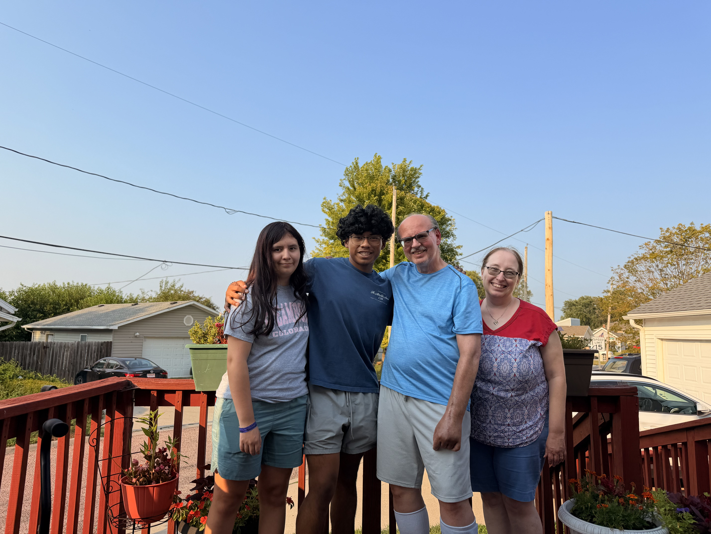

Iowa State Computer Engineering
Scott Gray
I am a computer engineering student from Council Bluffs, Iowa. I like building projects where I can see the logic work, break, and improve as I test it.

Iowa State University
Computer Engineering
Council Bluffs, Iowa
What I have worked on